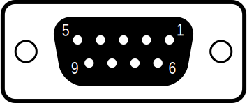

|
Arduino Sim Racing Library v2.0.0
|
|
Arduino Sim Racing Library v2.0.0
|
The Logitech Driving Force Shifter is implemented using the SimRacing::LogitechShifter class. This shifter is included with the G923, G920, and G29 wheels.
See the LogitechShifter_Print.ino and LogitechShifter_Joystick.ino examples for reference.
You can build your own DIY USB adapter using a male DE-9 connector. This is simple to make and does not require any modifications to the shifter. The above video walks you through the process of wiring to an Arduino Leonardo.
If you want something more robust, an open source shield is available to connect the shifter to a SparkFun Pro Micro. The design comes with a 3D printable case and custom board files so that the device appears as a "Sim Racing Shifter" over USB. You can use this shield to build an inexpensive USB HID adapter.
You can find all of the necessary files in the project repository.
 |  |
|---|---|
| DE-9 Male Connector | DE-9 Female connector |
DE-9 graphic from Aeroid @ Wikimedia Commons, modified for scale, colors, and creation of a complementary male version. These graphics are licensed under CC BY-SA 4.0.
The Logitech shifter connects to the wheel base units using a female DE-9 connector. Note that most jumper wires with DuPont headers will not fit snugly into a DE-9 connector. For reliability and ease of use it's recommended to use a mating male DE-9 connector when interfacing with the shifter.
Note that the DE-9 connector is often erroneously referred to as DB-9. These are the same thing.
| Function | DE-9 Pin | Internal J1 Pins | Internal J2 Pins | Wire Color | Necessary | Recommended Pin |
|---|---|---|---|---|---|---|
| Clock (SCLK) | 1 | 6 | - | Purple | - | - |
| Data Out (SDO) | 2 | 7 | 4 (via buffer) | Gray | X | 2 |
| Chip Select (CS) | 3 | 5 | - | Yellow | X (tied to power) | VCC2 |
| X Axis Wiper | 4 | 3 | 3 | Orange | X | A0 |
| Data In (SDI) | 5 | 2 | - | White | - | - |
| Ground | 6 | 8 | 1 | Black | X | GND |
| Power | 7 | 1 | 5 | Red | X1 | - |
| Y Axis Wiper | 8 | 4 | 2 | Green | X | A2 |
| Power | 9 | 1 | 5 | Red | X1 | VCC2 |
1. Both power pins are identical. Only one needs to be connected. The other can be used for a detection circuit in combination with a pull-down resistor.
2. VCC is the logic level voltage of your microcontroller. On most Arduinos this is the 5V pin.
The shifter's electronics are compatible up to 5V. Be sure to use the appropriate voltage for the logic level of your microcontroller.
The Logitech shifter has an internal EEPROM chip, presumably for storing settings and calibration data. In my shifter this is an ST Microelectronics M95010-W in an SO8 package. It has 1 Kbit of memory and can be read and written to via the DE-9 connector. The EERPOM does not need to be used in order to retrieve the control surface data from the devices.
This library does not implement EEPROM support, either for reading from the EEPROM or utilizing its data. The remaining two unused pins (SCLK and SDI) are only used for interfacing with the EEPROM.
{kind=link}